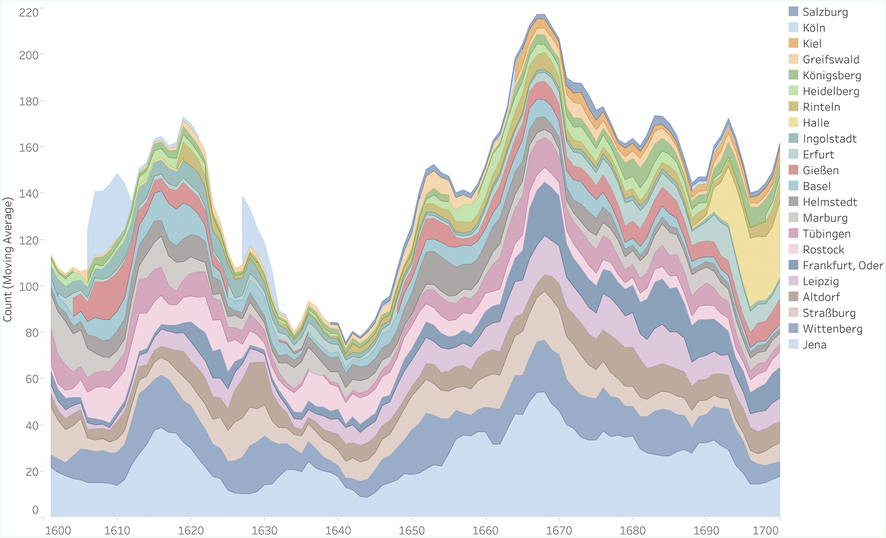
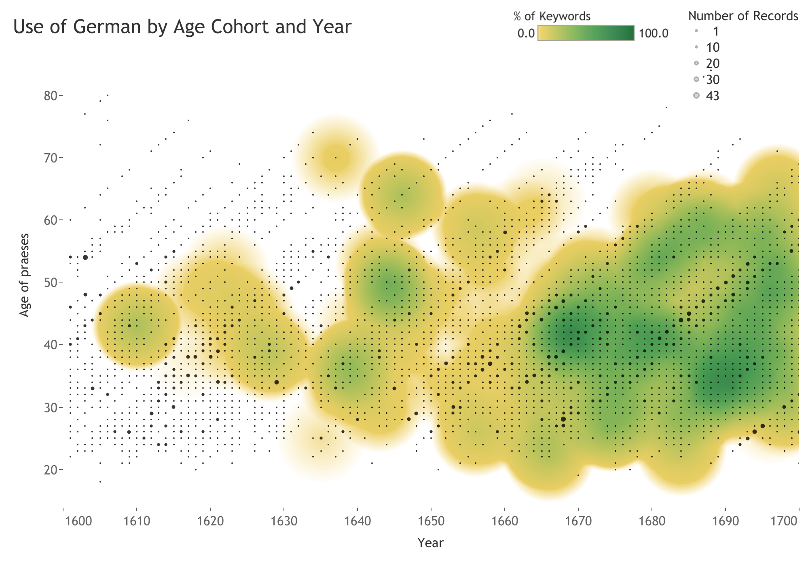
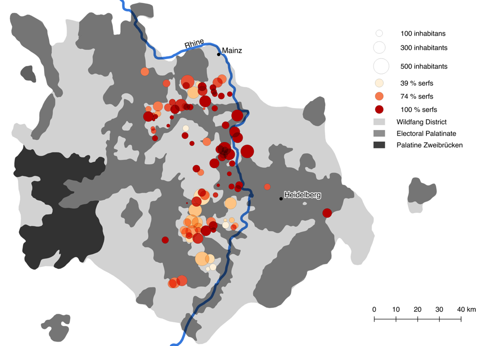
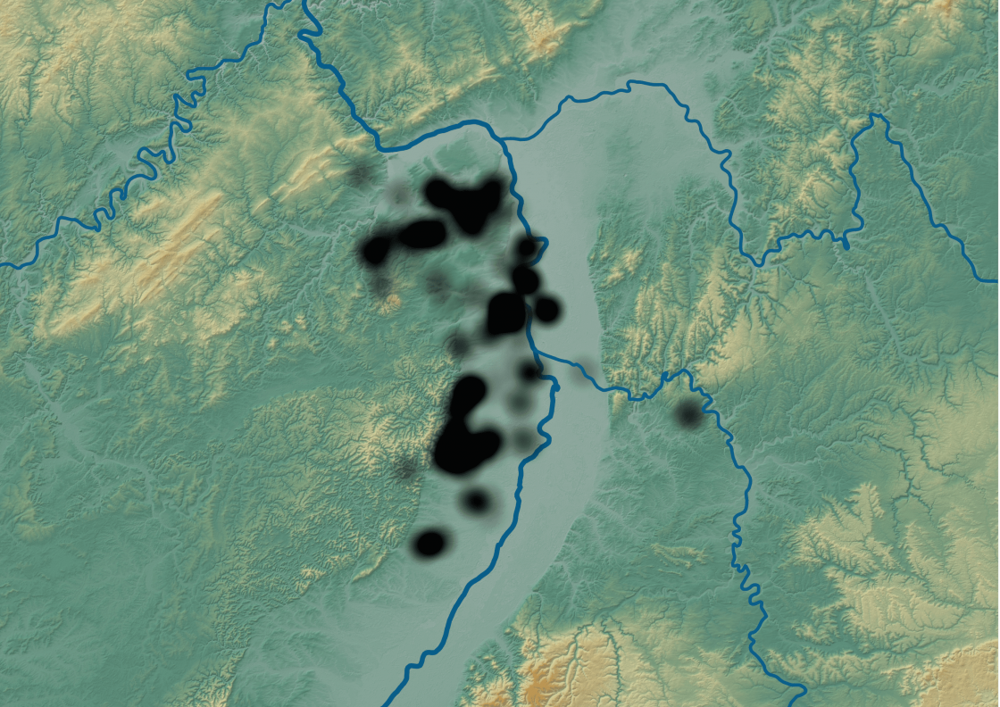

The Atmosphere in Spatial History
I am currently preparing a monograph on one of the most extensive projects of atmospheric intervention in European history, combining archival sources from 1750 to 1914 recovered in Austria, France, Germany, and Italy as well as digital evidence in an effort to develop the study of weather and climate in spatial history. A first article on the subject has been published in Past & Present.
A map produced by a consortium of weather shooters showing the arrangement of their cannons, juxtaposed with modern-day satellite imagery. To tilt the map, hold down both buttons.
Computational Historical Cartography
In this project, we systematically explore how new approaches in computational cartography and geovisualization, including those involving remotely sensed data, interactive display, and climate data, can advance argument-driven historical research. With Mark Ravina (University of Texas at Austin), supported by the Manchester – University of Texas Research Fund.
Distant Reading of Dissertations
I am interested in how digital distant reading approaches can support conceptual and intellectual history. Recently, I studied thematic and methodological trends in several tens of thousands of dissertations defended at early modern German universities. A first article offers an overview over legal dissertations of the seventeenth century and another employs a novel visualisation approach to retrace the role of different age cohorts.
I am also contributing to developing a large-scale computational study of the language of early capitalism.


New Maps for the Old Regime
At Stanford, I led the digital mapping project “New Maps for the Old Regime” within the Center for Spatial and Textual Analysis, using GIS to create new maps of old-regime Europe. Several of these maps have been published in my first book, in an article on the use of polygons in spatial history, and in a forthcoming study on the visual representation of shared dominion.


New Work in Digital Humanities
I initiated and co-host a podcast series, New Work in Digital Humanities, that offers a platform for some of the best recent work in the field.
Early Modern Mobility
Supported with over 150,000 $ from the UPS Endowment Fund and Stanford’s Program in History and Philosophy of Science, this collaborative project investigates the history of postal systems, roads, transportation, and communication infrastructure in early modern Europe. With Paula Findlen (Stanford), Katherine McDonough (London), Leo Barleta (Stanford), Rachel Midura (Stanford), Suzanne Sutherland (Murfreesboro), and Iva Lelková (Prague).